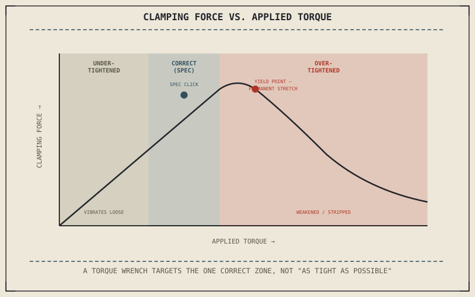

Chapter 12.1's basic kit named sockets, wrenches, and hex keys as the tools that turn a fastener. None of them, on their own, tell a rider when to stop turning. "Tight" feels like something a hand should be able to judge, and it can't — not reliably enough for the fasteners that actually matter on a motorcycle, which is exactly why this chapter gives the torque wrench its own dedicated space rather than folding it into the general kit.
Chapter 12.1 closed by pointing here: having the right tool is only half the job, and using it correctly on a fastener matters just as much. This chapter is about what "correctly" actually means.
Why a Hand Can't Judge Torque Reliably
Different fasteners, depending on their size, material, and thread pitch, need genuinely different amounts of turning force to reach the same clamping effect — an axle nut and a small bodywork screw are nowhere near the same target even though both simply "feel tight" to a hand turning them. Grip strength also varies with fatigue, body position, and the specific leverage a given wrench happens to offer, none of which a rider can fully account for by feel alone. What feels identically tight on two different fasteners can represent wildly different actual clamping forces, which is the entire problem a torque wrench exists to solve.
Undertightening: Vibration Loosens What Isn't Clamped Enough
A motorcycle vibrates constantly in ordinary operation, and a fastener tightened below its specified torque doesn't hold its clamping force against that vibration the way a properly torqued one does — it can work gradually looser over time, sometimes without any obvious warning before it fails. An axle nut, engine mount bolt, or caliper bolt loosening this way isn't a minor inconvenience; each is exactly the kind of fastener whose failure Chapter 11.7's pulling-to-one-side symptom or a genuinely dangerous wheel separation can trace back to.
A fastener tightened "as much as I can get it" isn't automatically safer than one tightened to spec — overtightening can stretch a bolt past the point it can safely return from, which is just as real a failure mode as a fastener that vibrates loose from being undertightened.

A diagram showing a bolt's clamping force plotted against applied torque, with an undertightened zone where vibration can loosen the fastener, a correct zone at the specified torque, and an overtightened zone where the bolt is permanently stretched past its elastic limit.
Overtightening: Stretching a Bolt Past Its Elastic Limit
A properly torqued bolt actually stretches very slightly as it's tightened, and that small elastic stretch is exactly what generates the clamping force holding two parts together — the bolt is designed to behave like a very stiff spring within a defined range. Turning it past that range doesn't make the joint more secure; it permanently deforms the bolt beyond its elastic limit, leaving it weaker than its rating even though nothing visibly looks wrong. Overtightening is a particular risk on the aluminium engine cases and covers Chapter 4.2 already described as more forgiving but softer than steel, where excess force can strip the threads in the case itself rather than the bolt.
A Common Misconception, Cleared Up Early
It's a common assumption that a fastener tightened "as much as I can get it" is automatically the safer choice, treating undertightening as the only real risk worth avoiding. This chapter has now shown overtightening as a genuine failure mode of its own, capable of permanently weakening a bolt or stripping the threads it's turned into. A torque wrench, set to the specific value a fastener actually calls for and used until it clicks or signals that value has been reached, removes the guesswork in both directions at once.
Where This Leads
A torque wrench is only useful once a rider knows the specific number to set it to. Chapter 12.3 turns to reading a service manual next, where those numbers actually come from.
Key Concepts to Remember
- A hand can't reliably judge torque, since identical-feeling tightness can represent very different actual clamping forces on different fasteners.
- Undertightening lets vibration gradually loosen a fastener; overtightening permanently stretches the bolt past its elastic limit or strips softer threaded material.
- A torque wrench set to a fastener's specified value removes the guesswork in both directions, rather than only guarding against undertightening.
Cross-References
| ← Ch. 12.1 | Established the basic tool kit's sockets and wrenches; this chapter treats the torque wrench as the tool that tells those others when to stop turning. |
| ← Ch. 11.7 | Established pulling to one side as a caliper fault symptom; this chapter treats an undertightened caliper bolt vibrating loose as one way that fault can begin. |
| ← Ch. 4.2 | Established aluminium as more forgiving but softer than steel; this chapter treats aluminium engine cases as specifically vulnerable to overtightened, stripped threads. |
| → Ch. 12.3 | Covers reading a service manual, where a fastener's specific torque value actually comes from. |